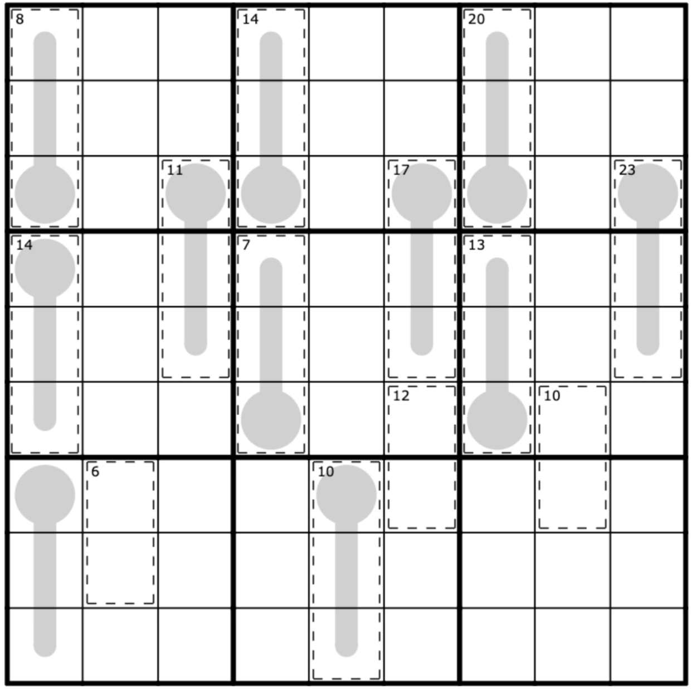

Antidiagonal by Sam Cappleman-Lynes
July 2nd, 2021
Time to Solve: 15:58
Normal Sudoku rules apply. Each marked diagonal contains only three distinct digits.
Link to Puzzle
Sandwich by clover!
July 1st, 2021
Time to Solve: 14:01
Normal sudoku rules apply. The numbers outside of the grid tell you the sum of all of the digits "sandwiched" between the 1 and the 9 in that row or that column.
Link to Puzzle
362880 subs by Trevor Tao
July 1st, 2021
Time to Solve: 27:47
Normal sudoku rules apply. Digits do not repeat in cages, and multiply together to give the number shown in the cage. The grey circle represents an odd digit.
Link to Puzzle
Revolution by Philip Newman
June 30th, 2021
Time to Solve: 7:31
Normal sudoku rules apply. Digits in diagonally adjacent cells cannot be the same. (In other words, a digit cannot touch itself, even diagonally.)
Link to Puzzle
Killer Arrow by Sam Cappleman-Lynes
June 29th, 2021
Time to Solve: 11:59
Normal sudoku rules apply. Digits in marked cages cannot repeat and must sum to the indicated total. Digits along an arrow must sum to the digit placed in the adjoining circle.
Link to Puzzle
German Whispers by clover!
June 28th, 2021
Time to Solve: 36:31
Normal sudoku rules apply. Along a grey line, each digit is different from its neighbors by at least 5. Digits may repeat along a grey line as long as they follow the other rules.
Link to Puzzle
129 Columns by Philip Newman
June 27th, 2021
Time to Solve: 4:51
Normal sudoku rules apply.
Link to Puzzle
The Miracle by Mitchell Lee
June 26th, 2021
Time to Solve: 34:11
Normal sudoku rules apply. Any two cells separated by a knight's move or a king's move (in chess) cannot contain the same digit. Any two orthogonally adjacent cells cannot contain consecutive digits.
Link to Puzzle
Thermo Sudoku by Sam Cappleman-Lynes
June 26th, 2021
Time to Solve: 8:48
Normal Sudoku rules apply. The digits placed on each thermometer shape must be strictly increasing, starting from the bulb (circle).
Link to Puzzle
625 by zetamath
June 26th, 2021
Time to Solve: 2:00:00
Every row/column contains the digits 1-9 exactly once each. Digits may not repeat along the marked (blue) diagonal. In cages, digits must sum to the small clue in the top left corner of the cage. Digits cannot repeat within a cage. Every cage must be entirely shaded or unshaded, and every row and column contains at least one shaded cell. In each row and column the cell that contains the number of shaded cells in that row/column is indicated either by a square or a circle. Circles indicate that all shaded cells in that row/column are orthogonally connected; squares indicate those shaded cells are not all orthogonally connected (though some may be). Whether a particular square/circle corresponds to its row/column (or both) is to be determined.
Link to Puzzle
Chinese Coin by Aspartagcus
June 25th, 2021
Time to Solve: 45:24
Normal sudoku rules apply. The square bulb and line form a 'thermometer' which must be populated by double-digit numbers. Each number starts with the tens-digit followed by the units digit (seen from the bulb end) ie tens and units digits alternate along the line. The numbers must increase moving away from the bulb.
Link to Puzzle
Point To Next by clover!
June 25th, 2021
Time to Solve: 18:00
Normal sudoku rules apply. If a digit appears in a cell with an arrow, then the arrow has to point to the next highest digit. For instance, if you put an 8 in an arrow cell, then there must also be a 9 somewhere in the direction the arrow is pointing. (It doesn't have to be right next to the 8, it just has to be in that direction somewhere). (Note: it has to be specifically the next highest digit, not just any higher digit.)
Link to Puzzle
Shot Thru the <3 by Philip Newman
June 24th, 2021
Time to Solve: 17:00
Normal sudoku rules apply. Digits in cages must sum to the total given, and digits cannot repeat within a cage. Digits along each grey line must form a palindrome (that is, a sequence of digits which reads the same starting from either end; for example, “123292321”).
Link to Puzzle
Consec Pairs by Sam Cappleman-Lynes
June 23rd, 2021
Time to Solve: 7:05
Normal sudoku rules apply. Digits on either side of a white dot must be consequtive. There is no negative constraint.
Link to Puzzle
The OG Wiggle
June 23rd, 2021
Time to Solve: 62:18
Normal sudoku rules apply. The grey circle is odd and the grey square is even. Digits along the blue line must be between the values at each end of that line. Digits along an arrow sum to the value in the associated circle. (The two-digit pill should be read as a two-digit number from left to right for these purposes.) Digits in a cage do not repeat; if a value is given for the cage, the digits sum to that value. Digits along a thermometer must increase from the bulb end. The orange cell is greater than the four digits orthogonally adjacent to it. Two cells separated by a black dot must have a 1:2 ratio. Digits along the marked brown diagonal may not repeat.
Link to Puzzle
Thermo Killer by clover!
June 22nd, 2021
Time to Solve: 18:47
Normal sudoku rules apply. Digits in a cage must not repeat and must sum to the values provided. Digits along a thermometer must strictly increase, starting from the bulb (round) end.
Link to Puzzle
GAK by Philip Newman
June 22nd, 2021
Time to Solve: 10:00
Normal sudoku rules apply. Digits in cells connected by a black dot must have a ratio of 2:1 (that is, one digit is double the other digit). Digits in cells connected by a white dot must be consecutive. There are no negative constraints (digits in adjacent cells not connected by a dot could be consecutive, have a ratio of 2:1, or neither).
Link to Puzzle
Love Heart by kuraban
June 21st, 2021
Time to Solve: 25:25
Normal sudoku rules apply. Along thermometers, digits must increase from the bulb end. In cages, digits must sum to the small clue in the top left corner of the cage. Digits cannot repeat within a cage. Digits along an arrow must sum to the digit in that arrow's circle/pill. The two digit pill total is read from top down. Digits in cells separated by X must sum to 10. Not all Xs are given.
Link to Puzzle